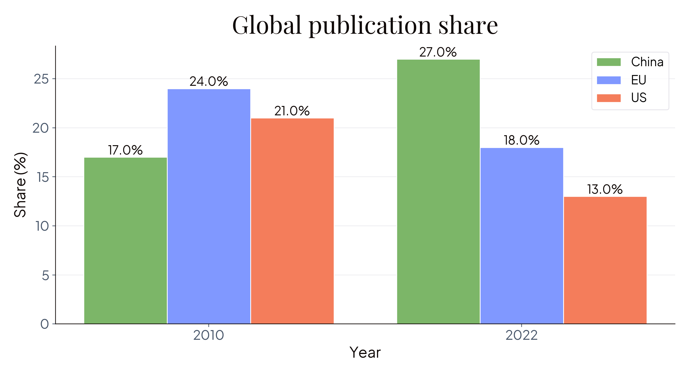
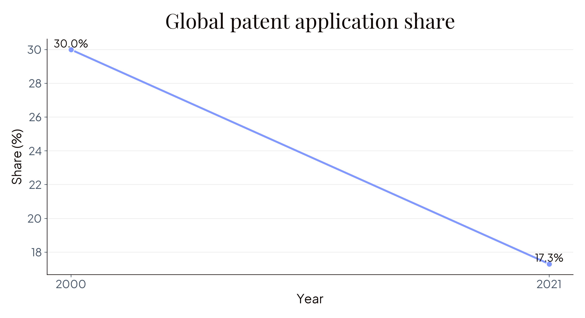
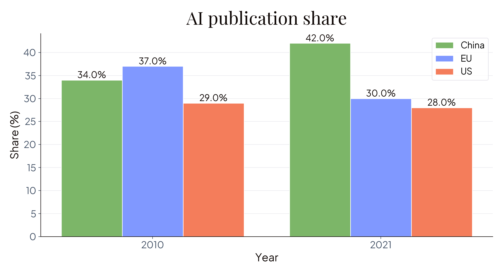
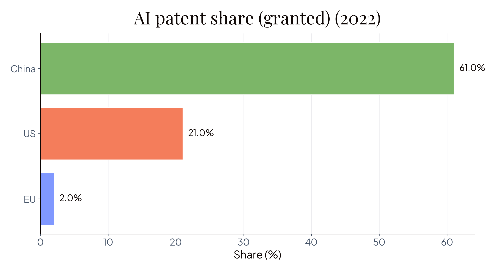
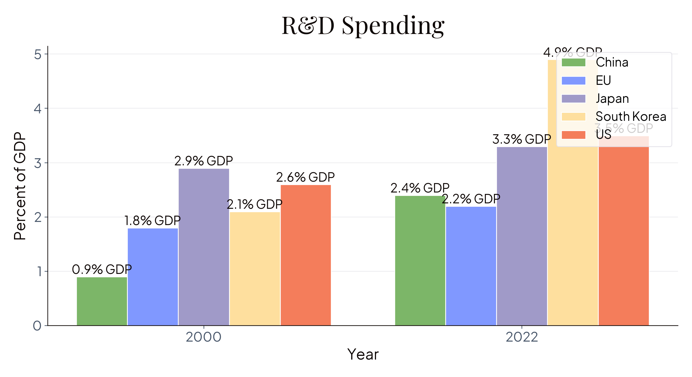

How Can Europe Become a Science Superpower?
centre
for future
generations
Europe considers itself a scientific powerhouse
[Quotes to be added]
Is this (still) true? Not really


Source: Heitor Report — Align Act Accelerate, Sept 2024
It is far worse in AI


Source: Heitor Report — Align Act Accelerate, Sept 2024
We are spending less than our peers

Source: Heitor Report — Align Act Accelerate, Sept 2024
And we are spending it in worse ways
[To be added: research on how EU spending is less effective]
The diagnosis is clear and there is an EU consensus
Major reports in 2024 reached the same conclusion:
Von der Leyen (Europe's Choice, 2024)
“Boost ‘Europe's competitiveness – and its position in the race to a clean and digital economy’ by ‘starting a new age of invention and ingenuity. This requires putting research and innovation, science and technology, at the centre of our economy.’”
Draghi Report (September 2024)
“Europe has no innovation ‘clusters’ in the top 10 globally, while the US has 4 and China has 3.”
“Public spending on R&I in Europe lacks scale and is insufficiently focused on breakthrough innovation.”
“Horizon Europe … is spread across too many fields and access is excessively complex and bureaucratic.”
Enter Framework Programmes: What are they?
Timeline: FP1 (1984) → FP10 (2028)
Framework Programmes are the EU's multi-year research and innovation funding instruments: Europe's way of coordinating and funding science at continental scale.
- 7-year cycles aligned with EU budget (Multiannual Financial Framework)
- Cross-border collaboration: Typically requires consortia from multiple member states
- Competitive funding: Open calls, peer review, excellence-based selection
- Bottom-up + top-down: Mix of researcher-led proposals and strategic priorities (Missions)
Evolution: Started modest in 1984 (FP1: €3.8B), now reaching €175B (FP10): a 46x increase
Think of it as: Europe's R&D operating system, the infrastructure layer that funds everything from blue-sky physics to climate tech startups.
FP10 in Context: How It Compares
European public R&D landscape:
- Total EU public R&D spend: ~€100B annually (all member states combined)
- FP10: €175B over 7 years = €25B/year (roughly 25% of European public R&D)
- National programmes: Germany (~€40B/yr), France (~€20B/yr), others vary widely
- Comparison: US NSF (~€8B/yr), NIH (~€40B/yr), total US federal R&D (~€140B/yr)
Why FP matters disproportionately:
- Sets standards: National programmes often follow FP structures and priorities
- Enables scale: Cross-border projects impossible at national level (CERN, EuroHPC, clinical trials)
- Strategic direction: Missions and challenges signal where Europe thinks science should go
- Talent magnet: Horizon grants carry prestige, attract top researchers
The catch: Despite significant funding, Europe's innovation output lags inputs, especially in translating research to commercial success.
Europe's Core Science Bottlenecks
The paradox: Europe produces excellent science but struggles with breakthrough innovation
1. Risk aversion in funding structures
- Peer review favours safe, incremental projects
- Grant success rates ~12% → applicants optimise for “fundability” not “impact”
- Multi-year review cycles deter high-risk research
2. Valley of Death (lab to market)
- Strong basic research, weak commercialisation
- University tech transfer offices often bureaucratic
- VC concentrated in few cities (unlike US ecosystem)
3. Bureaucratic burden
- Horizon applications notoriously complex (100+ page proposals)
- Researchers spend more time on paperwork than research
- Administrative costs can reach 20–30% of grant value
4. Fragmentation
- 27 national systems with different rules, standards, career structures
- Limited researcher mobility compared to US
- No equivalent of NIH or NSF as unifying institution
Draghi Report: “The innovation gap stems from funding structures that discourage risk-taking, not insufficient investment.”
Translation: We can fix this without spending more: we need to spend smarter.
FP10 — Europe's €175 Billion Question
FP10 is the EU's 10th Framework Programme for Research and Innovation (2028–2034).
The scale:
- €175B budget (nearly double current Horizon Europe's €93B)
- €25B/year = Largest coordinated European research programme
- Equivalent to 3 years of Germany's total national R&D budget
The stakes:
- Decisions made in next 18 months lock in European science policy through 2034
- Window to address all four bottlenecks identified above
- This is the structural reform opportunity, or we lock in business-as-usual for another seven years
What Are the Opportunities?
Four policies to close the gap
1. Double R&D spending
Match US/China investment levels
2. Create a real European ARPA
Breakthrough research with genuine independence
3. Build an EU Meta-Science Unit
Reform how we fund research
4. Use AI to cut bureaucracy
Speed decisions, free researcher time
Double R&D spending
The gap: Europe spends 2.2% of GDP on R&D vs 3.5% in US, 2.4% in China (but rising fast)
What this means:
- Draghi Report recommendation: Increase to match competitors
- FP10 nearly doubles to €175B, but member states must also step up
- Target: €200B+ annually across EU (currently ~€100B)
Why it matters: You can't win the innovation race while spending half what competitors do.
Create a real European ARPA
(not just rebrand the EIC)
- 10% of FP10 budget (€17.5B) for genuinely independent research agencies
- Autonomous programme managers with multi-year budgets
- Accept 90% failure rates to get 10x breakthroughs
- Model: UK's ARIA, Germany's SPRIND
Build an EU Meta-Science Unit
(currently doesn't exist)
- Test and compare different funding mechanisms
- Import proven innovations: lotteries, distributed peer review, golden tickets
- Make Europe the lab for research funding reform
Use AI to cut bureaucracy
- Reduce bureaucratic burden that currently drowns applicants
- Follow NSF's lead in building internal AI platforms
- Free up researcher time for actual research
The window is now
Timing matters: FP10 negotiations run through 2027. Decisions made in the next 18 months will shape European science for 2028–2034.
Political alignment exists: Multiple presidencies (Lithuania, Greece) explicitly support “tolerance for failure” and “risk-taking culture”, the language matches these reforms.
The alternative: Continue spending €100B+ annually with incrementally better results, whilst the US and China pull further ahead.